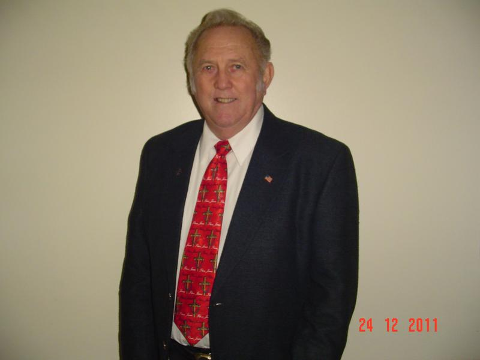
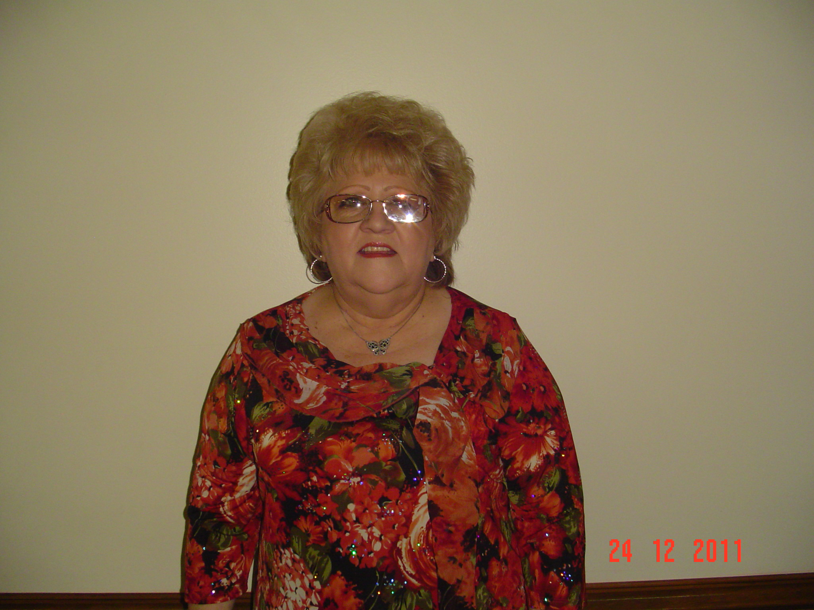

The Church Where Your Past Doesn't Matter.
And we mean it!
Harvest Fellowship Pentecostal Church of God/ Community Church was first established in the 1950's as Lonoke Pentecostal Church of God. Over the years the church has had several different names and numerous pastors. The church has been up and down in attendance and at the time of our appointment, there was only one person, plus the pastor and his family. Brother W. H. Stoddard, known as Brother Tubbs, had remained faithful to the church.
When Arkansas District Bishop James Baker called and asked me to go preach at Lonoke P.C.G., and while there, see if I would want to pastor the church, he never stuttered or hesitated when he informed me that there was only one member. To say the least, I was amazed and somewhat taken aback. Why would he want me to drive all the way to Lonoke and preach to just one person? Within the next few weeks I learned, and was assured that Bishop Baker had been in touch with the Lord.
On our first Sunday I fed Brother Tubbs and my wife the full load. I almost kept Bro. Tubbs awake but to my amazement, Brother Tubbs called the Bishop and asked if I would return the following Sunday.
In the few months preceeding our appointment, the church outgrew the facility, and in July of 2010 we were blessed with our present location. The church building, located at 202 Waggoner St., had been vacant for about three years. I sincerely believe that God set the building aside as a place for our church to continue to grow and develop.
A year-and-a-half later we have outgrown this location and praying every day for a much larger facility, which I am sure that God will provide. In September 2017 we were blessed by Sister Mary Evelyn Watson and family with 4 beautiful acres of land on Hwy 31 N just a few hundred yards east of the off-ramp of I-40 West.
Harvest Fellowship is an awesome church; and different from any I have ever been a part of as a member or pastor.
- Worship wise, we are old-fashion' Pentecost.
- We are mostly bluegrass/country and southern gospel music, but we invite all varieties. I open our Sunday morning services with a breakdown on the fiddle.
- Our singers are anointed and worship the Lord with all that they have.
- We preach, teach, and believe, that Pentecost is not a denomination, but an experience and infilling of supernatural power generated by nothing but love, and love for all of Gods' people.
- Our people not only love the Lord, but they love each other, and they show it.
COME SEE US AS SOON AS YOU CAN, YOU'LL LOVE IT.
Pastor Dale Carter Sr. and Judy Carter

Bro. Dale Carter in 1983. |

Sis. Judy Carter in 1983 |

Time changes everything except the word of God. |
|

Bro. Dale Carter in 2011 |

Sis. Judy Carter in 2011 |